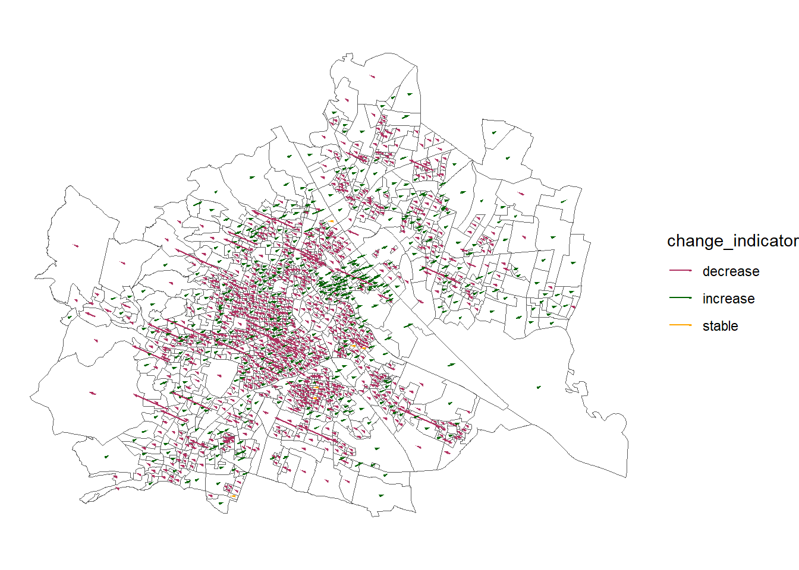

Partly triggered by my last post on replicating NYT’s electoral maps, I came across the nascent/experimental snapbox package (link) by Anthony North and Miles McBain. The package provides a convenient way to add mapbox tiles as basemaps to maps created with ggplot (did I mention ‘maps’?`).
The package is quite straightforward and not much to explain about. What caused me some hassles though was to figure out how to combine the basemap with my data, plotted with geom_segment or geom_sf. The critical issue here is to ensure that the maps projection of the coordiante system are the same. Hence, this post is somewhat a note to myself, graphs are not polished and I don’t dig into substantive matters. For the purpose of demonstration, I’ll use electoral data from the city of Vienna and want to highlight how the number of eligible voters per precinct (‘Wahlsprengel’) changed between 2015 and 2020.
Code: Load packages
library(snapbox)
library(sf)
library(tidyverse)
#library(magick)
knitr::knit_hooks$set(crop = knitr::hook_pdfcrop) #allows to crop white frame from ggplots.
#for details see https://bookdown.org/yihui/rmarkdown-cookbook/crop-plot.html
plot_bg_color <- readr::read_file(file=here::here("themes", "hugo-theme-basic", "static", "css",
"style.css")) %>%
str_extract(., regex("(?<=background-color:).*?(?=;)")) %>% str_trim()Get the election results from 2015 and 2020, retrieve the number of eligible voters per precinct (`wber``), and calculate the change.
Code: Get electoral data + change in number of elegible voters
# https://www.data.gv.at/katalog/dataset/stadt-wien_wahleninwiengemeinderatswahlen/resource/a526df98-c307-4dee-8233-43b02856d1d7
# https://www.wien.gv.at/politik/wahlen/hilfetext/rohdaten.html
res20 <- readr::read_csv2(file = "https://www.wien.gv.at/politik/wahlen/ogd/gr201_99999999_9999_spr.csv")
res15 <- readr::read_csv2(file = "https://www.wien.gv.at/politik/wahlen/ogd/gr151_99999999_9999_spr.csv")
res <- bind_rows(elections=list('2020'=res20, '2015'=res15), .id="election") %>%
janitor::clean_names() %>%
janitor::remove_empty("cols") %>%
mutate(election=as.numeric(election)) %>%
mutate(indicator_sprengel=bz*1000+spr, .after=spr) %>%
select(election:wber)
# change of eligible voters ----------------------------------------------------------
df_wber_diff <- res %>%
filter(wber>0) %>% #remove 'technical' precincts for mail & absentee voting
select(-contains("nuts")) %>%
group_by(indicator_sprengel) %>%
arrange(desc(election), .by_group=T) %>%
mutate(wber_diff=wber-lead(wber)) %>%
filter(election==2020) %>%
mutate(wber_diff_rel=wber_diff/wber) %>%
ungroup() %>%
mutate(change_indicator=case_when(wber_diff_rel>0 ~ "increase",
wber_diff_rel<0 ~ "decrease",
TRUE ~ as.character("stable")))## # A tibble: 1,483 x 4
## indicator_sprengel wber_diff wber_diff_rel change_indicator
## <dbl> <dbl> <dbl> <chr>
## 1 1001 -43 -0.0640 decrease
## 2 1002 -34 -0.0521 decrease
## 3 1003 -36 -0.0574 decrease
## 4 1004 -8 -0.0247 decrease
## 5 1005 -76 -0.104 decrease
## 6 1006 -43 -0.0814 decrease
## 7 1007 -74 -0.138 decrease
## 8 1008 -17 -0.0297 decrease
## 9 1009 -48 -0.0650 decrease
## 10 1010 -31 -0.0442 decrease
## # ... with 1,473 more rowsLet’s have a quick look at the distribution of the change rates:
Code: Distribution of changes
pl_dist <- df_wber_diff %>%
ggplot()+
ggridges::geom_density_line(aes(x=wber_diff_rel))+
labs(x="% change number of eligible voters 2020 vs 2015")+
theme(axis.text.y=element_blank())
table(df_wber_diff$change_indicator)##
## decrease increase stable
## 978 451 54##
## decrease increase stable
## 978 451 54So, while the purpose of this post is not to dig into substantive matters, I was a bit surprised to see that a large majority of precincts features a decreased number of eligible voters.
Get the shapefile of the precincts’ boundaries.
Code: Get shape with boundaries of precincts
# https://www.data.gv.at/katalog/dataset/79c1030d-5cf6-4d58-ade6-02f66fb4dffb
precincts <- st_read(here::here("blog_data","static_map_snapbox","shapefile","WAHLSPRGR2020OGDPolygon.shp"),
quiet=T) %>%
janitor::clean_names() %>%
mutate(sprengel=as.numeric(sprengel))
ggplot()+
geom_sf(data=precincts)Now let’s calculate the center of each precinct. Note that I transform the coordination projection from WGS84 to 3857. The latter is ‘a Spherical Mercator projection coordinate system popularized by web services such as Google and later OpenStreetMap.’1
After the transformation I take the x and y values from the centroids’ geometry. The function st_centroid gives us the centre of each polygon.
Code: Get centroids for precincts
st_crs(precincts)## Coordinate Reference System:
## User input: WGS 84
## wkt:
## GEOGCRS["WGS 84",
## DATUM["World Geodetic System 1984",
## ELLIPSOID["WGS 84",6378137,298.257223563,
## LENGTHUNIT["metre",1]],
## ID["EPSG",6326]],
## PRIMEM["Greenwich",0,
## ANGLEUNIT["degree",0.0174532925199433],
## ID["EPSG",8901]],
## CS[ellipsoidal,2],
## AXIS["geodetic longitude",east,
## ORDER[1],
## ANGLEUNIT["degree",0.0174532925199433]],
## AXIS["geodetic latitude",north,
## ORDER[2],
## ANGLEUNIT["degree",0.0174532925199433]]]cent_precincts <- precincts %>%
st_transform(., crs=3857) %>%
st_centroid() %>%
mutate(point_x=map_dbl(geometry, pluck, 1),
point_y=map_dbl(geometry, pluck, 2))
ggplot()+
geom_sf(data=precincts)+
geom_sf(data=cent_precincts,
size=0.1)Calculate the length of the arrow indicating the change: Here the arrows should have an angle of 20 degrees; positive changes point towards the right, negative changes towards the left. With the sin and cos function we calculate the horizontal and vertical distance from the centroids. In addition, to make the arrows sufficiently long to be visible, I multiply them with a scale factor. Note that I add coord_sf() to the plot which ‘ensures that all layers use a common CRS.’2
Code: Calculate length of arrows indicating change
scale_factor <- 10^3
df_change <- cent_precincts %>%
left_join(., df_wber_diff,
by=c("sprengel"="indicator_sprengel")) %>%
mutate(x_change=wber_diff_rel*sin(20),
y_change=abs(wber_diff_rel)*cos(20)) %>%
mutate(point_x_end=point_x+(x_change*scale_factor), .after=point_x) %>%
mutate(point_y_end=(y_change*scale_factor)+point_y, .after=point_y)
pl_change <- ggplot()+
geom_sf(data=precincts,
size=0.1,
fill="transparent")+
geom_segment(data=df_change,
aes(x=point_x,
xend=point_x_end,
y=point_y,
yend=point_y_end,
color=change_indicator),
linejoin="mitre",
arrow=arrow(length=unit(0.05, "cm"),
angle=15,
type="closed"),
size=0.5)+
scale_color_manual(values=c("increase"="darkgreen",
"decrease"="maroon",
"stable"="orange"))+
coord_sf(crs=3857)+
theme_void()## Warning: Removed 48 rows containing missing values (geom_segment).
Now, let’s add a mapbox basemap by using the layer_mapbox function of snapbox. To so, we first have to define the scope or boundary of the basemap. I do this by extracting the minimum and maximum x and y values from our map of the precincts. And then create a bbox object. Note that this boundary box is has the 4326 projection. The basemap for this boundary box is then added to the plot by using the layer_mapbox function. Note that you need an API-key to access basemaps of mapbox.
Et voila.
Code: Add mapbox basemap
#get boundaries of plot
#map boundaries: get max/min x, y values
d <- precincts$geometry
d <- attributes(d)$bbox
my_xmin <- d[[1]]
my_ymin <- d[[2]]
my_xmax <- d[[3]]
my_ymax <- d[[4]]
my_xmin## [1] 16.18183my_ymin## [1] 48.1179my_xmax## [1] 16.57751my_ymax## [1] 48.32267#get basemap
background_image <- st_bbox(
c(xmin = my_xmin, ymin = my_ymin, xmax = my_xmax, ymax = my_ymax),
crs=4326)
#combine
pl_combined <- ggplot()+
layer_mapbox(background_image,
map_style = mapbox_galley_pencil(),
mapbox_api_access_token = Sys.getenv("MAPBOX_ACCESS_TOKEN"),
scale_ratio = 1)+
geom_sf(data=precincts,
size=0.2,
fill="transparent")+
geom_segment(data=df_change,
aes(x=point_x,
xend=point_x_end,
y=point_y,
yend=point_y_end,
color=change_indicator),
linejoin="mitre",
arrow=arrow(length=unit(0.05, "cm"),
angle=15,
type="closed"),
size=0.5)+
scale_color_manual(values=c("increase"="darkgreen",
"decrease"="maroon",
"stable"="orange"))+
coord_sf(crs=3857)+
theme_void()+
theme(legend.position = "none")You can quickly change the background image by specifying a different map_style value, e.g. below
I use the decimal style. And also combine with a different aesthetic, e.g. using fill to color the precincts according to their respective change.
Code: Gradient fill of precincts
df_fill <- precincts %>%
left_join(., df_change %>% select(sprengel, wber_diff_rel) %>% as.data.frame(),
by=c("sprengel"="sprengel"))
pl_combined2<- ggplot()+
layer_mapbox(background_image,
map_style = mapbox_gallery_north_star(),
mapbox_api_access_token = Sys.getenv("MAPBOX_ACCESS_TOKEN"),
scale_ratio = 1)+
geom_sf(data=df_fill,
aes(fill=wber_diff_rel),
size=0.2)+
scale_fill_gradient2(low="red", high="green", mid="white",
breaks=scales::pretty_breaks(n=4)(min(df_fill$wber_diff_rel, na.rm = T):
abs(min(df_fill$wber_diff_rel, na.rm=T))),
guide = "colourbar",
name="% change eligible voters 2015-2020",
limits=c(min(df_fill$wber_diff_rel, na.rm=T), abs(min(df_fill$wber_diff_rel, na.rm=T))))+
coord_sf(crs=3857)+
theme_void()+
theme(plot.background = element_rect(fill=plot_bg_color, color=plot_bg_color),
legend.title = element_text(size=7, vjust=1),
legend.text = element_text(size=5),
legend.position = "bottom",
legend.justification = "left")+
guides(fill = guide_colourbar(barwidth = 3, barheight = .2, title.position = "top"))